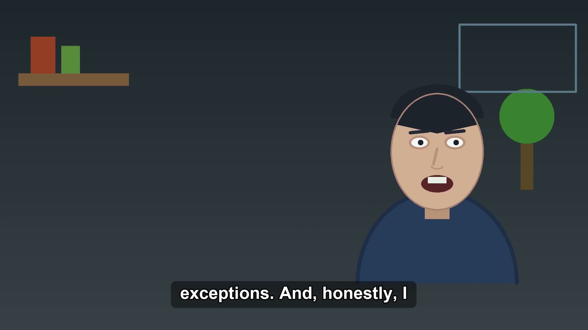
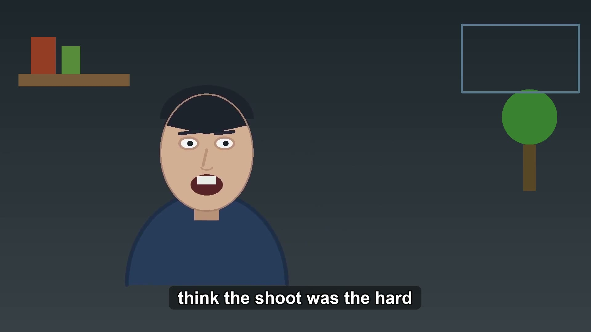
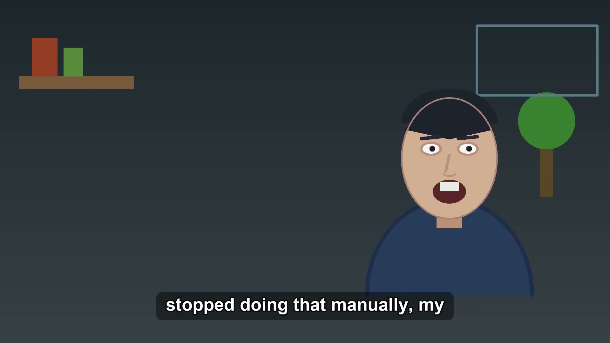
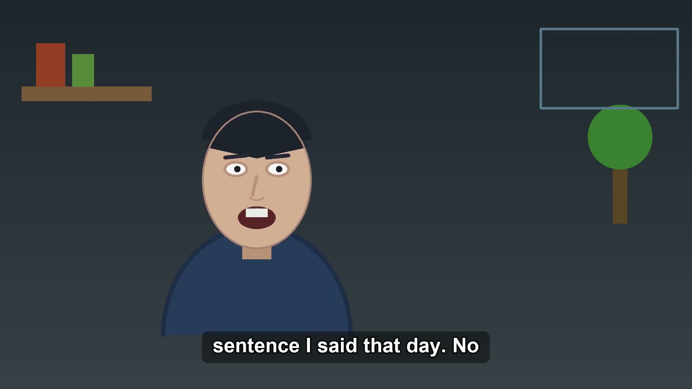
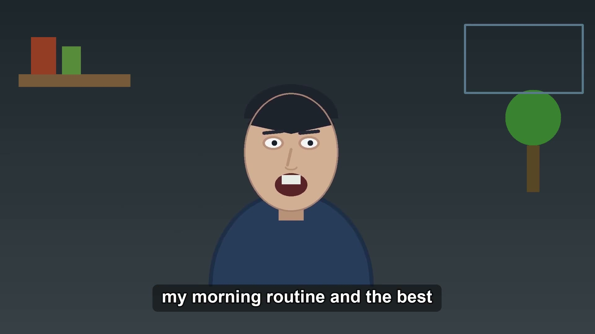
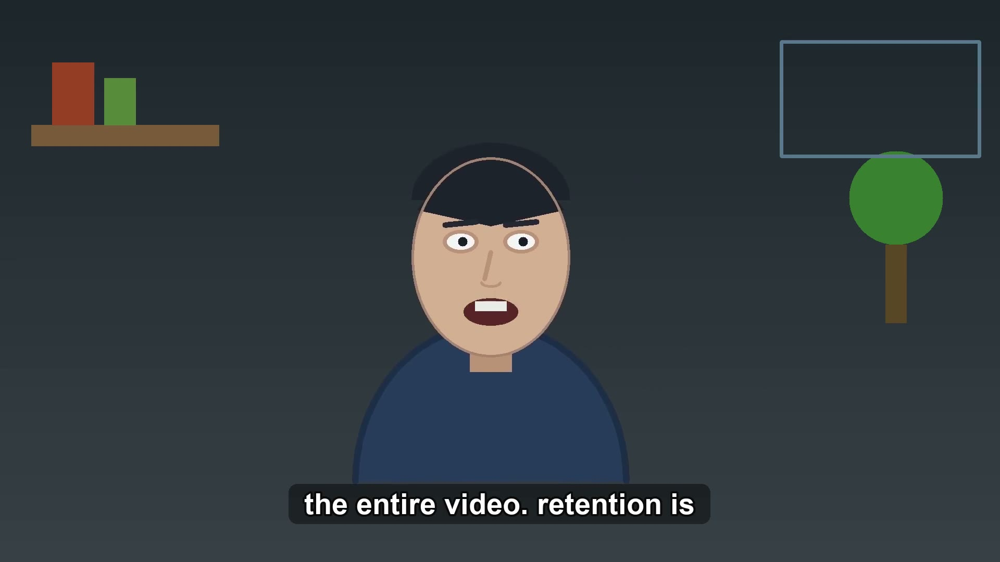
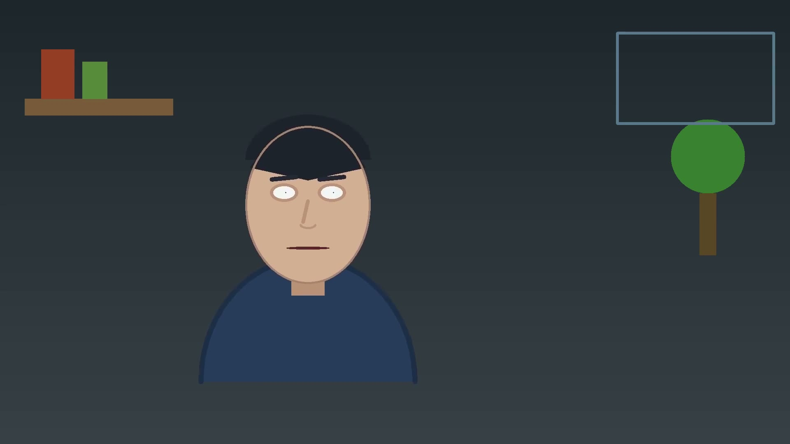
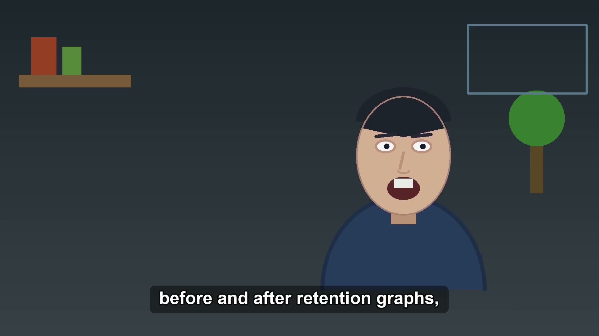

Three lessons from my first 30 days of daily vlogging
16:9 long-form — final/long-169.mp4
9:16 short — final/short-916.mp4
| # | start | end | dur | reason |
|---|---|---|---|---|
| 1 | 0:01.6 | 0:01.7 | 0.10s | filler 'um' |
| 2 | 0:04.2 | 0:05.1 | 0.85s | silence (1.151s dead air) |
| 3 | 0:09.1 | 0:09.7 | 0.62s | silence (0.918s dead air) |
| 4 | 0:10.4 | 0:10.8 | 0.36s | filler 'uh' |
| 5 | 0:14.0 | 0:15.2 | 1.14s | silence (1.435s dead air) |
| 6 | 0:19.4 | 0:19.8 | 0.34s | filler 'um' |
| 7 | 0:22.6 | 0:24.0 | 1.41s | silence (1.711s dead air) |
| 8 | 0:25.8 | 0:26.2 | 0.36s | filler 'um' |
| 9 | 0:28.9 | 0:29.6 | 0.72s | silence (1.019s dead air) |
| 10 | 0:32.1 | 0:32.7 | 0.57s | silence (0.869s dead air) |
| 11 | 0:34.5 | 0:34.8 | 0.30s | filler 'ah' |
| 12 | 0:40.0 | 0:40.7 | 0.70s | silence (1.0s dead air) |
| 13 | 0:41.8 | 0:42.8 | 1.03s | silence (1.333s dead air) |
| 14 | 0:44.5 | 0:44.8 | 0.28s | filler 'um' |
| 15 | 0:49.8 | 0:51.1 | 1.31s | silence (1.609s dead air) |
| 16 | 0:55.6 | 0:57.2 | 1.55s | silence (1.855s dead air) |
| 17 | 1:02.9 | 1:03.2 | 0.33s | silence (0.629s dead air) |
| 18 | 1:23.1 | 1:24.6 | 1.50s | silence (1.796s dead air) |
| 19 | 1:25.5 | 1:25.8 | 0.28s | filler 'uh' |
| 20 | 1:28.1 | 1:28.7 | 0.62s | silence (0.915s dead air) |
| 21 | 1:33.9 | 1:34.0 | 0.14s | filler 'um' |
| 22 | 1:36.9 | 1:37.7 | 0.73s | silence (1.035s dead air) |
| 23 | 1:42.8 | 1:43.3 | 0.50s | silence (0.804s dead air) |
| 24 | 1:45.7 | 1:46.0 | 0.34s | filler 'ah' |
| 25 | 1:49.4 | 1:50.2 | 0.84s | silence (1.145s dead air) |
| 26 | 1:54.2 | 1:55.5 | 1.30s | silence (1.605s dead air) |
| 27 | 1:56.7 | 1:57.0 | 0.30s | filler 'um' |
| 28 | 2:00.2 | 2:01.0 | 0.83s | silence (1.132s dead air) |
| 29 | 2:02.9 | 2:03.6 | 0.71s | silence (1.013s dead air) |
| 30 | 2:06.7 | 2:07.1 | 0.32s | filler 'ah' |
| 31 | 2:09.0 | 2:09.6 | 0.61s | silence (0.913s dead air) |
| 32 | 2:13.4 | 2:13.9 | 0.52s | silence (0.82s dead air) |
| 33 | 2:17.1 | 2:18.0 | 0.84s | silence (1.142s dead air) |
| 34 | 2:22.9 | 2:24.1 | 1.22s | silence (1.518s dead air) |
| 35 | 2:24.9 | 2:25.1 | 0.16s | filler 'um' |
| 36 | 2:30.2 | 2:30.7 | 0.57s | silence (0.873s dead air) |
| 37 | 2:34.0 | 2:34.3 | 0.32s | filler 'ah' |
| 38 | 2:38.4 | 2:38.8 | 0.39s | silence (0.689s dead air) |
| stage | model | status | cost |
|---|---|---|---|
| plan | sonnet | done | $0.0425 |
| package | sonnet | done | $0.0608 |
| optimize | haiku | done | $0.0147 |
| ingest + edit + caption | — (local ffmpeg / whisper / OpenCV engine) | done | $0.0000 |
| total metered | $0.1180 | ||







